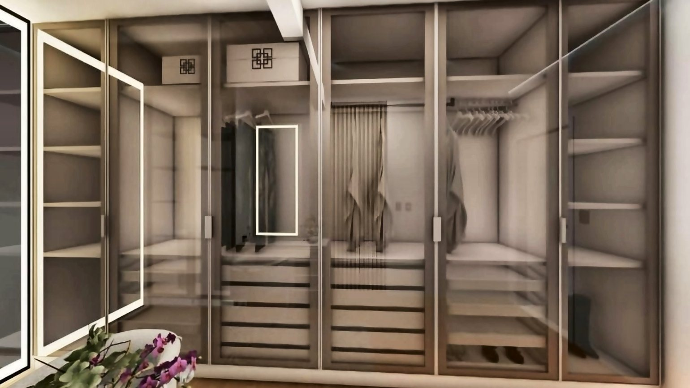
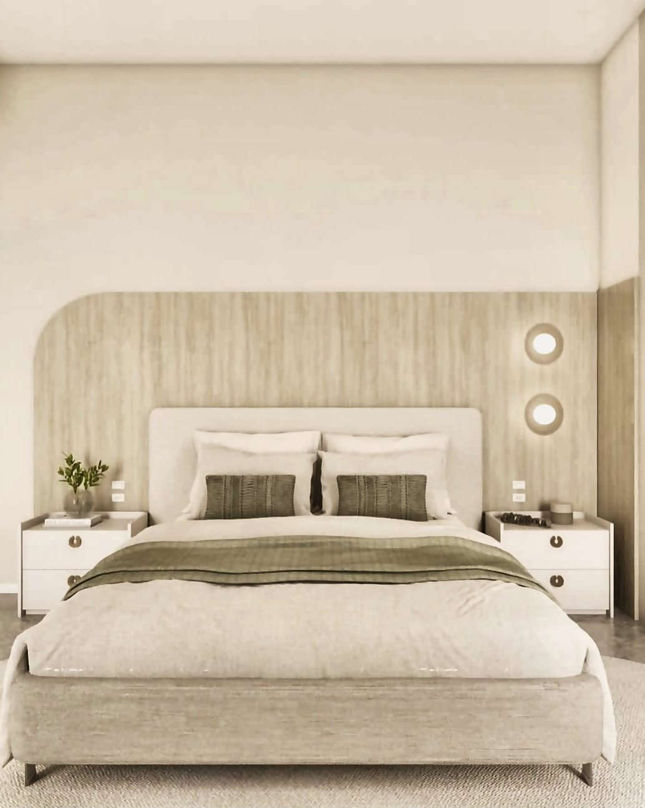
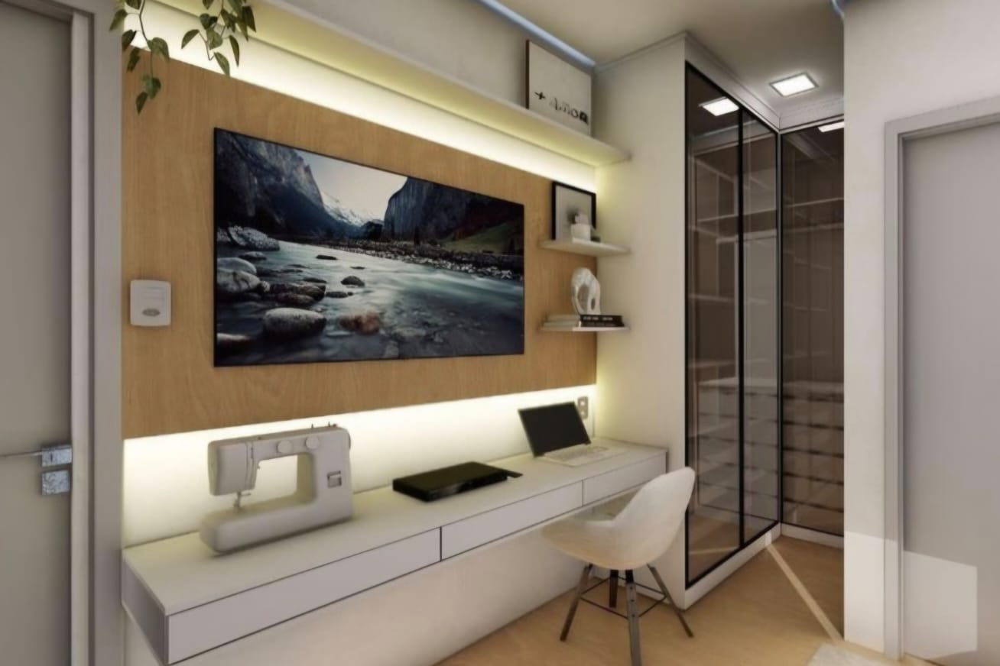
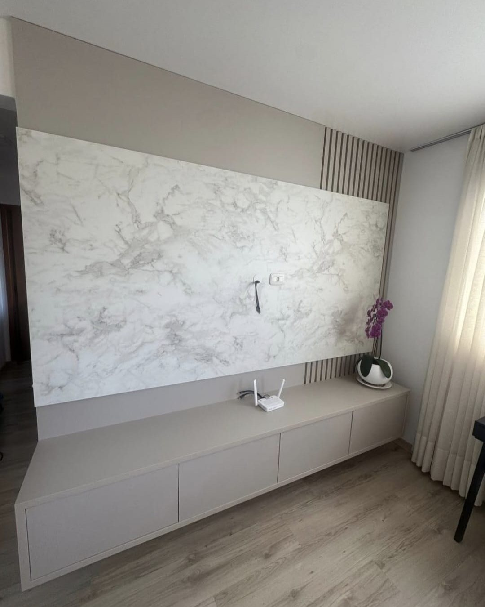
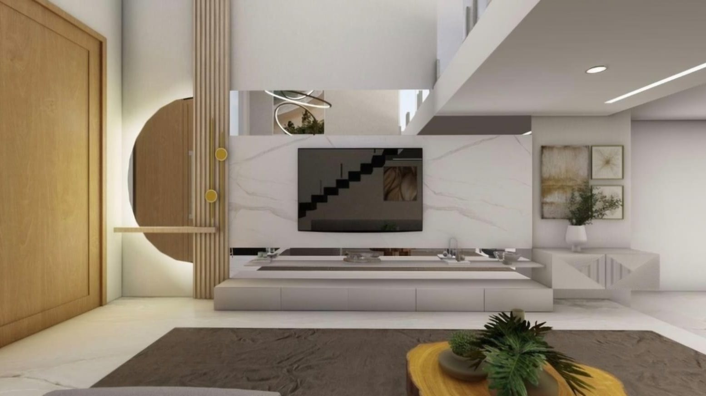
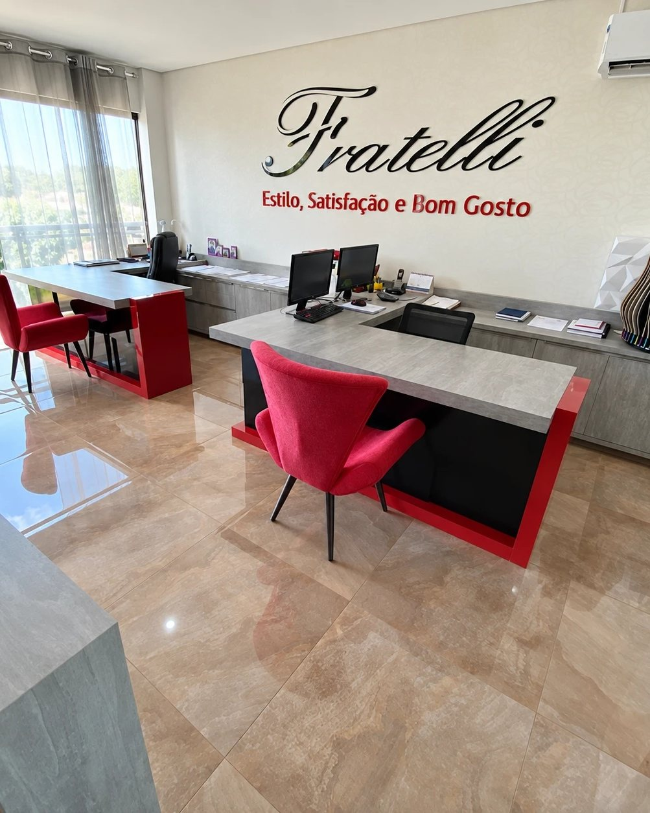

Projeto em 3D

Fratelli Móveis · Cascavel, PR
Projetos sob medida para ambientes reais.
Como trabalhamos
Antes da marcenaria, vem a medida do dia a dia: por onde se passa, onde se apoia, o que precisa ficar à mão e o que pode desaparecer atrás de uma porta.
Cada projeto nasce dessa leitura. O móvel acompanha o pé-direito, respeita a passagem e encontra o prumo da parede — em vez de disputar espaço com ela.
Fratelli Móveis
Marcenaria sob medida, proporção, luz e acabamento em cada escolha.
Projetos
Do desenho em 3D ao ambiente instalado. Cada imagem indica em que etapa foi registrada.






Ambientes
Processo
Visita ao espaço, levantamento das medidas e entendimento do uso de cada ambiente.
Desenho do móvel, definição de materiais, ferragens e acabamentos, com orçamento fechado.
Corte, usinagem e montagem das peças conforme o detalhamento aprovado.
Instalação no local, ajuste fino de portas e gavetas e revisão final com o cliente.
Sobre
A Fratelli Móveis trabalha com móveis planejados: projeto, produção e montagem sob medida para o espaço de cada cliente.
Atendimento na R. Cacequi, 492 — Canadá, em Cascavel. O projeto começa com uma conversa e a medição do espaço.

Avaliações
5,0 de 5 na avaliação dos clientes.
![Avaliação de Joseane Terraplanagem 2019, cinco estrelas, há três anos: “Minha experiência a melhor os móveis super modernos acabamento impecável , atendimento top entrega na data prevista .sem contar a qualidade dos matérias dou nota mil super recomendo”. Aspectos positivos: Receptividade, Pontualidade, Qualidade, Profissionalismo e Valor. Serviços: Mobiliário para banheiro, Mobiliário para dormitório, Móveis para quartos infantis, Mobiliário para cozinha, Móveis de sala de estar e Móveis sob medida.](assets/images/avaliacao-joseane-996.webp)
Contato
Conte em que ambiente você está pensando e quais medidas já tem em mãos. A partir daí combinamos a visita e o levantamento.
Cascavel Paraná
R. Cacequi, 492 — Canadá · Cascavel, Paraná
Como chegar